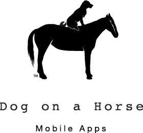

PyGame
Who's This Chick?
Piper Thunstrom
Server Developer
Twitter: @pathunstrom
What's This Talk?
PyGame!
Interesting problems
Games are fun!
What's in this talk?
- The best parts of Pygame
- Putting them together
- Design patterns
What's not in this talk?
- Artificial intelligence
- Installation issues
- I'm not even sure what those do?
- Where'd that one go?
The Building Blocks
Surface
A digital canvas that can be drawn on and blitted to other surfaces.
How do you get a Surface?
pygame.Surface((300, 300))
pygame.image.load(path)
pygame.display.set_mode((300, 300))
pygame.display represents the screen.
What can you do with a Surface?
Match the pixel format of another Surface
Surface.convert(Surface2) -> Surface
Convert Surfaces you plan to blit regularly.
Draw one Surface to another Surface
Surface.blit(Surface, (x, y))
Origin is top left.
Set transparencies
Surface.set_colorkey(Color)
Colors are either a Pygame Color object or a 3 tuple of RGB values.
Surface.set_alpha(value)
Fill!
Surface.fill(Color)
Draw lines
pygame.draw.line(Surface, Color, start, end, width=5
Similar to aaline. Width replaced with a blend.
pygame.draw.lines(Surface, color, closed, pointlist, width)
Similar to aalines and polygon
Draw Circles
pygame.draw.circle(Surface, color, pos, radius, width=0)
Points are almost always (x, y) tuples.
Draw Rectangles
pygame.draw.rect(Surface, color, Rect, width=0)
The Surface, color, Rect signature is shared with draw.ellipse, and is part of the draw.arc signature.
What's a Rect?
Make a Rect
pygame.Rect(x, y, width, height)
pygame.Rect((x, y), (width, height))
Rects are just rectangles.
Why are they so awesome?
Magic attributes
Rect.center = x, y
Collisions
Rect.collidepoint(x, y)
Rect.colliderect(Rect)
Rect.collidelist(list)
Rect.collidedict(dict)
There's also collidedictall and collidelistall
Sprites
What makes a sprite?
- Sprite.image
- Sprite.rect
- Sprite.update(*args, **kwargs)
Everything else is optional
Sprite groups
Group.add(Sprite)
Group.remove(Sprite)
Group.update(*args, **kwargs)
Group.draw(Surface)
Events
Event Types
- QUIT
- KEYDOWN and KEYUP for keyboard, mouse, and joystick
- MOUSEMOTION
- JOY AXIS, BALL and HAT motion.
- VIDEORESIZE
- USEREVENT
Handling Events
for event in pygame.events.get():
if event.type == pygame.QUIT:
pygame.event.post(pygame.event.Event(pygame.QUIT)
Can pass events in a publisher-subscriber model
Keyboard
pygame.key.get_pressed()
Dict of key ids with a boolean values.
pygame.locals includes K_{key} constants.
Mouse
Putting It Together
/